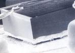

Die Lifting
Die lifting
is the disbonding or detachment of the die from its die pad or die
cavity. A die
that undergoes
die lifting is commonly referred to as a
'lifted die'.
Die lifting
mechanisms
may be
classified into
three
types: 1) die lifting caused by a fracture within the die attach
material itself (cohesion failure); 2) die lifting due to delamination
between the die backside and the die attach material (adhesion failure);
or 3) die lifting due to delamination between the die attach material
and the die pad or cavity (adhesion failure).
Determining which of these mechanisms is predominant in a die
lifting issue is important in preventing its recurrence.
Excessive
voids, insufficient fillet formation, and inadequate bond line thickness
lower
the
fracture strength
of the die attach material,
which can lead to its
cohesion failure
once the unit is
subjected to thermo-mechanical stresses. When this happens, the die
attach material fractures in the middle and results in die lifting, leaving die attach material
still sticking on both the die backside and the die pad. The
degradation of the mechanical strength of the die attach material can
also be due to: 1) contamination; 2) chemical degradation with time; and
3) chemical degradation from external factors, e.g., moisture,
temperature, etc.
|
 |
|
Figure 1.
SEM photo of a lifted die
caused by
insufficient die attach fillet
|
Adhesion
failures
can also be
caused by the aforementioned issues, i.e.,
excessive die attach voids, insufficient fillet formation, inadequate
bond line thickness, and die attach material problems.
However, they are also frequently encountered when contaminants are
present on the attachment surface. Thus, contaminants
on the die backside can lead to die attach-to-die delamination, while contaminants
on the die pad can lead to die attach-to-die pad
delamination. Either way, the resulting delamination can lead to die
lifting. Eutectic die attach delaminations may also be due to inadequate scrubbing, incorrect preform
size, and improper equipment settings.
Inadequate
die attach fillet formation and
excessive
die attach voids act as
stress concentrators
that can also result in contiguous cracks at the backside of the die, especially in units that
use eutectic die attach. These cracks can propagate to a point wherein
the upper part of the die is separated from the bottom part. If the
bottom part of the die is still attached to the die attach system, then
this, technically, is still a
die cracking
problem
(not die
lifting),
although extreme cases indeed give the impression that the die has
lifted off from its resting place.
Die Lifting
may be
accelerated by SHRT,
Temp Cycle, and Thermal Shock.
See also:
Package
Failure Mechanisms;
Die Crack FA
Flow;
Die Attach; Failure Analysis
HOME
Copyright
©
2005.
EESemi.com.
All Rights Reserved.